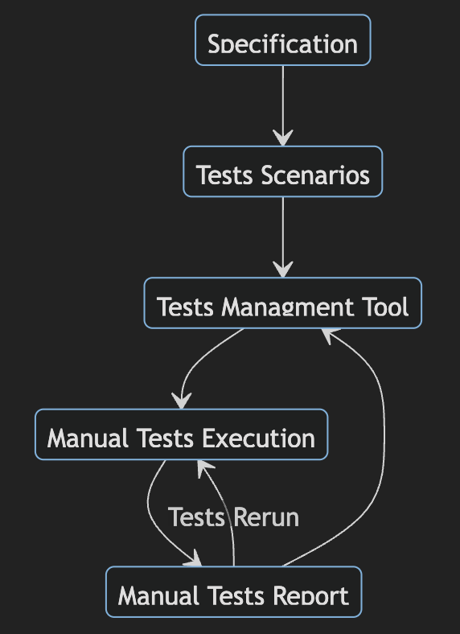
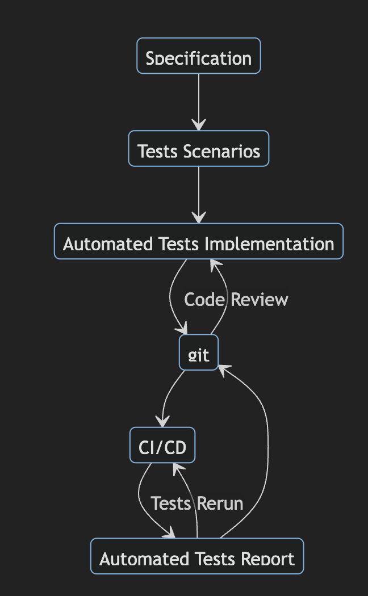
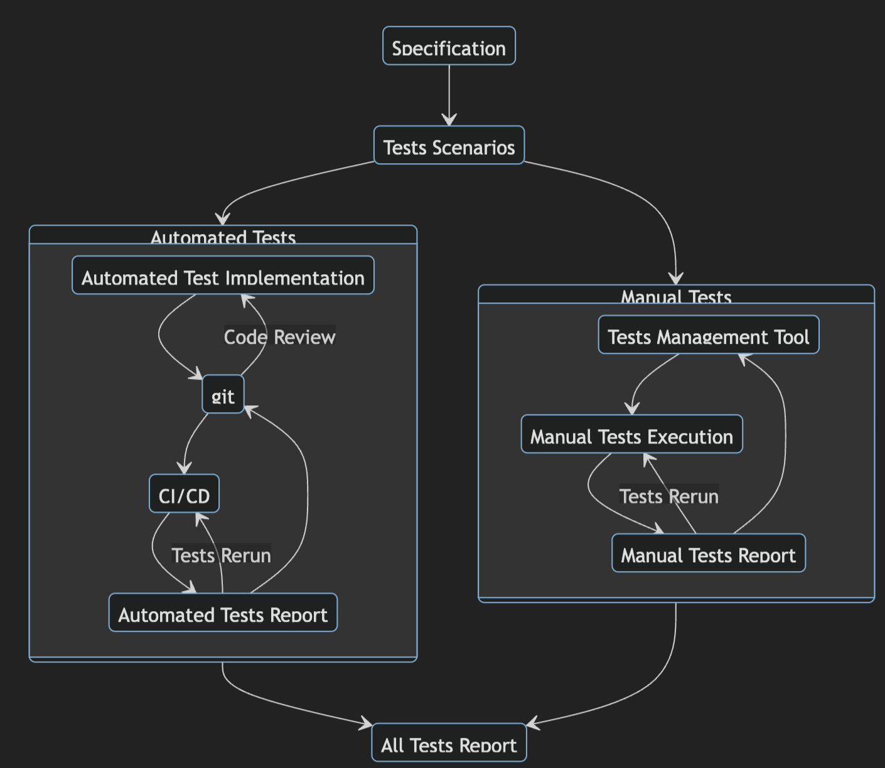
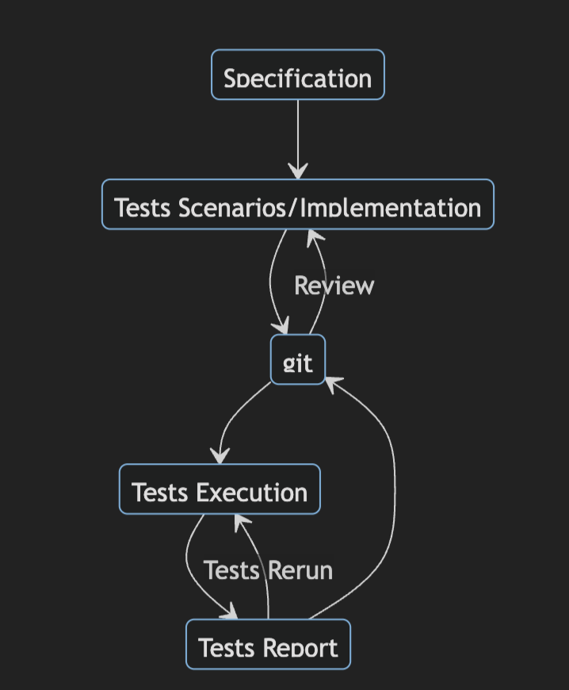
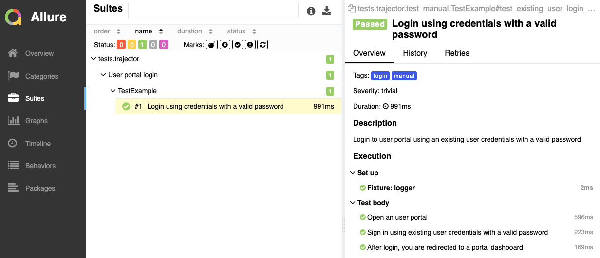
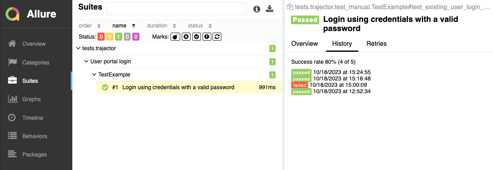

<!DOCTYPE html>
<html lang="en">
<head>
<meta charset="utf-8">
<meta content="width=device-width,initial-scale=1,maximum-scale=1,user-scalable=no" name="viewport">
<title></title>
<link href="dist/reveal.css" rel="stylesheet">
<link href="dist/theme/blood.css" rel="stylesheet" id="theme">
<link href="plugin/highlight/monokai.css" rel="stylesheet">
<link href="css/layout.css" rel="stylesheet">
<link href="plugin/customcontrols/style.css" rel="stylesheet">
<link href="plugin/chalkboard/style.css" rel="stylesheet">
<script src="dist/fontawesome/all.min.js" defer></script>
<script type="text/javascript">var forgetPop=!0;function onPopState(e){forgetPop?forgetPop=!1:parent.postMessage(e.target.location.href,"app://obsidian.md")}function fitElements(){var e,t,o=document.getElementsByClassName("fitText");for(e in o)Object.hasOwnProperty.call(o,e)&&(fitElement(t=o[e],1,1e3),t.classList.remove("fitText"))}function fitElement(e,t,o){let n=(o+t)/2;if(e.style.fontSize=n+"px",Math.abs(t-o)<1)for(;e.scrollHeight>e.offsetHeight;)n--,e.style.fontSize=n+"px";else e.scrollHeight>e.offsetHeight?fitElement(e,t,n):fitElement(e,n,o)}window.onpopstate=onPopState,window.onmessage=e=>{"reload"==e.data&&window.document.location.reload(),forgetPop=!0},document.onreadystatechange=()=>{if(fitElements(),"complete"===document.readyState&&(-1!=window.location.href.indexOf("?export")&&parent.postMessage(event.target.location.href,"app://obsidian.md"),-1!=window.location.href.indexOf("print-pdf"))){let e=setInterval(()=>{clearInterval(e),window.print()},250)}}</script>
</head>
<body>
<div class="reveal">
<div class="slides"><section data-markdown><script type="text/template"><!-- .slide: class="drop" -->
<div class="" style="position: absolute; left: 0px; top: 0px; height: 768px; width: 1366px; min-height: 768px; display: flex; flex-direction: column; align-items: center; justify-content: center" absolute="true">

## Manual tests

### +

## git

### +

## Allure
</div></script></section><section data-markdown><script type="text/template"><!-- .slide: class="drop" -->
<div class="" style="position: absolute; left: 0px; top: 0px; height: 768px; width: 1366px; min-height: 768px; display: flex; flex-direction: column; align-items: center; justify-content: center" absolute="true">


<!-- .element: style="width: 75%" -->

by Maciej 'maQ' Kusz
</div></script></section><section data-markdown><script type="text/template"><!-- .slide: class="drop" -->
<div class="" style="position: absolute; left: 0px; top: 0px; height: 768px; width: 1366px; min-height: 768px; display: flex; flex-direction: column; align-items: center; justify-content: center" absolute="true">

- Ile czasu poświęcasz na stworzenie raportu?
- &shy;<!-- .element: class="fragment" data-fragment-index="1" -->le czasu poświęcasz na aktualizacje scenariuszy?
- &shy;<!-- .element: class="fragment" data-fragment-index="2" -->Gdzie przechowujesz raporty z testów manualnych?
- &shy;<!-- .element: class="fragment" data-fragment-index="3" -->Gdzie przechowujesz scenariusze testów manualnych?
</div></script></section><section data-markdown><script type="text/template"><!-- .slide: class="drop" -->
<div class="" style="position: absolute; left: 0px; top: 0px; height: 768px; width: 1366px; min-height: 768px; display: flex; flex-direction: column; align-items: center; justify-content: center" absolute="true">

- TestRail
- Xray
- TestLink
- Zaphyr
- Excel (But why?)
</div></script></section><section data-markdown><script type="text/template"><!-- .slide: class="drop" -->
<div class="" style="position: absolute; left: 0px; top: 0px; height: 768px; width: 1366px; min-height: 768px; display: flex; flex-direction: column; align-items: center; justify-content: center" absolute="true">

## Cykl życia

Testy manualne vs automatyczne
</div></script></section><section data-markdown><script type="text/template"><!-- .slide: class="drop" -->
<div class="" style="position: absolute; left: 0px; top: 0px; height: 768px; width: 1366px; min-height: 768px; display: flex; flex-direction: column; align-items: center; justify-content: center" absolute="true">

<div class="" style="position: absolute; left: 0%; top: 0%; height: 100%; width: 50%; display: flex; flex-direction: column; align-items: center; justify-content: center" markdown="1">





</div>

<div class="fragment" style="position: absolute; left: 50%; top: 0%; height: 100%; width: 50%; display: flex; flex-direction: column; align-items: center; justify-content: center" markdown="1" data-fragment-index="0.5">





</div>
</div></script></section><section data-markdown><script type="text/template"><!-- .slide: class="drop" -->
<div class="" style="position: absolute; left: 0px; top: 0px; height: 768px; width: 1366px; min-height: 768px; display: flex; flex-direction: column; align-items: center; justify-content: center" absolute="true">

### Testy manualne

### +

### testy automatyczne

### =

### problemy?
</div></script></section><section data-markdown><script type="text/template"><!-- .slide: class="drop" -->
<div class="" style="position: absolute; left: 0px; top: 0px; height: 768px; width: 1366px; min-height: 768px; display: flex; flex-direction: column; align-items: center; justify-content: center" absolute="true">

<div class="" style="position: absolute; left: 0%; top: 0%; height: 100%; width: 50%; display: flex; flex-direction: column; align-items: center; justify-content: center" markdown="1">





</div>

<div class="fragment" style="position: absolute; left: 50%; top: 0%; height: 100%; width: 50%; display: flex; flex-direction: column; align-items: center; justify-content: center" data-fragment-index="0.5">

#### PROBLEMY?

- &shy;<!-- .element: class="fragment" data-fragment-index="1" -->Aktualizacja testów przy zmianie specyfikacji
- &shy;<!-- .element: class="fragment" data-fragment-index="2" -->Review testów manualnych
- &shy;<!-- .element: class="fragment" data-fragment-index="3" -->Synchronizacja opisu testów automatycznych
- &shy;<!-- .element: class="fragment" data-fragment-index="4" -->Raporty
- &shy;<!-- .element: class="fragment" data-fragment-index="5" -->Tworzenie testów automatycznych z manualnych
- &shy;<!-- .element: class="fragment" data-fragment-index="6" -->Bug tracking
</div>
</div></script></section><section data-markdown><script type="text/template"><!-- .slide: class="drop" -->
<div class="" style="position: absolute; left: 0px; top: 0px; height: 768px; width: 1366px; min-height: 768px; display: flex; flex-direction: column; align-items: center; justify-content: center" absolute="true">

## Jak żyć?
</div></script></section><section data-markdown><script type="text/template"><!-- .slide: class="drop" -->
<div class="" style="position: absolute; left: 0px; top: 0px; height: 768px; width: 1366px; min-height: 768px; display: flex; flex-direction: column; align-items: center; justify-content: center" absolute="true">

<div class="" style="position: absolute; left: 0%; top: 0%; height: 100%; width: 50%; display: flex; flex-direction: column; align-items: center; justify-content: center" >

## SSoT
Single Source of Truth <!-- .element: class="fragment" data-fragment-index="2" -->
</div>

lub <!-- .element: class="fragment" data-fragment-index="3" -->

<div class="fragment" style="position: absolute; left: 50%; top: 0%; height: 100%; width: 50%; display: flex; flex-direction: column; align-items: center; justify-content: center" data-fragment-index="4">

## SPoT
Single Point of Truth
</div>
</div></script></section><section data-markdown><script type="text/template"><!-- .slide: class="drop" -->
<div class="" style="position: absolute; left: 0px; top: 0px; height: 768px; width: 1366px; min-height: 768px; display: flex; flex-direction: column; align-items: center; justify-content: center" absolute="true">


</div></script></section><section data-markdown><script type="text/template"><!-- .slide: class="drop" -->
<div class="" style="position: absolute; left: 0px; top: 0px; height: 768px; width: 1366px; min-height: 768px; display: flex; flex-direction: column; align-items: center; justify-content: center" absolute="true">

<div class="" style="position: absolute; left: 0%; top: 0%; height: 100%; width: 50%; display: flex; flex-direction: column; align-items: center; justify-content: center" markdown="1">


<div class="mermaid">
stateDiagram
	TSI: Tests Scenarios/Implementation
	
	Specification --> TSI
	
	TR : Tests Report
	TE: Tests Execution
	
	TSI --> git
	git --> TSI : Review
	git --> TE
	TE--> TR
	TR --> TE : Tests Rerun
	TR --> git

</div>
 
<!-- .element: style="height: 100%; width: 100%; margin-top: 20%" -->
</div>

<div class="fragment" style="position: absolute; left: 50%; top: 0%; height: 100%; width: 50%; display: flex; flex-direction: column; align-items: center; justify-content: center" data-fragment-index="0.5">

#### ZALETY

- &shy;<!-- .element: class="fragment" data-fragment-index="1" -->Git jako SSoT
- &shy;<!-- .element: class="fragment" data-fragment-index="2" -->Wspólny proces review
- &shy;<!-- .element: class="fragment" data-fragment-index="3" -->Śledzenie zmian w scenariuszach testów manualnych
- &shy;<!-- .element: class="fragment" data-fragment-index="4" -->DevTeam widzi scenariusze testów manualnych
- &shy;<!-- .element: class="fragment" data-fragment-index="5" -->Wspólne raporty
</div>
</div></script></section><section data-markdown><script type="text/template"><!-- .slide: class="drop" -->
<div class="" style="position: absolute; left: 0px; top: 0px; height: 768px; width: 1366px; min-height: 768px; display: flex; flex-direction: column; align-items: center; justify-content: center" absolute="true">

<div class="" style="position: absolute; left: 0%; top: 0%; height: 100%; width: 50%; display: flex; flex-direction: column; align-items: center; justify-content: center" markdown="1">





</div>

<div class="" style="position: absolute; left: 50%; top: 0%; height: 100%; width: 50%; display: flex; flex-direction: column; align-items: center; justify-content: center" >

#### ZALETY cd

- Testy manualne stają się "półautomatyczne"
- &shy;<!-- .element: class="fragment" data-fragment-index="1" -->Łatwiejsze tworzenie testów automatycznych z manualnych
- &shy;<!-- .element: class="fragment" data-fragment-index="2" -->Łatwiejsze utrzymanie scenariuszy testowych
- &shy;<!-- .element: class="fragment" data-fragment-index="3" -->Automatyzacja raportów
</div>
</div></script></section><section data-markdown><script type="text/template"><!-- .slide: class="drop" -->
<div class="" style="position: absolute; left: 0px; top: 0px; height: 768px; width: 1366px; min-height: 768px; display: flex; flex-direction: column; align-items: center; justify-content: center" absolute="true">

<div class="" style="position: absolute; left: 0%; top: 0%; height: 100%; width: 50%; display: flex; flex-direction: column; align-items: center; justify-content: center" markdown="1">


</div>

<div class="" style="position: absolute; left: 50%; top: 0%; height: 100%; width: 50%; display: flex; flex-direction: column; align-items: center; justify-content: center" >

#### WADY

- &shy;<!-- .element: class="fragment" data-fragment-index="1" -->Tworzenie i review testów manualnych
- &shy;<!-- .element: class="fragment" data-fragment-index="2" -->Uruchamianie testów manualnych (półautomatycznych)
- &shy;<!-- .element: class="fragment" data-fragment-index="3" -->Tworzenie raportów
 
&nbsp;

</div>
</div></script></section><section data-markdown><script type="text/template"><!-- .slide: class="drop" -->
<div class="" style="position: absolute; left: 0px; top: 0px; height: 768px; width: 1366px; min-height: 768px; display: flex; flex-direction: column; align-items: center; justify-content: center" absolute="true">

## Jak to zrobić?
</div></script></section><section data-markdown><script type="text/template"><!-- .slide: class="drop" -->
<div class="" style="position: absolute; left: 0px; top: 0px; height: 768px; width: 1366px; min-height: 768px; display: flex; flex-direction: column; align-items: center; justify-content: center" absolute="true">

### Czego potrzebujemy?

- &shy;<!-- .element: class="fragment" data-fragment-index="1" -->Python + pytest + pydantic + click + requests/playwright
- &shy;<!-- .element: class="fragment" data-fragment-index="2" -->2 repozytoria git (GitHub): tests, reports
- &shy;<!-- .element: class="fragment" data-fragment-index="3" -->Allure
- &shy;<!-- .element: class="fragment" data-fragment-index="4" -->IDE (pycharm, vscode)
</div></script></section><section data-markdown><script type="text/template"><!-- .slide: class="drop" -->
<div class="" style="position: absolute; left: 0px; top: 0px; height: 768px; width: 1366px; min-height: 768px; display: flex; flex-direction: column; align-items: center; justify-content: center" absolute="true">

#### Hierarchia Testów Manualnych

```console  
├─ file directory  
│  ├─  suite name  
│  │  ├─  python class name  
│  │  │  ├─ test title  
│  │  │  └─ other test title  
│  │  └─ other python class name  
│  └─ other suite name  
└─ other file directory  
```
</div></script></section><section data-markdown><script type="text/template"><!-- .slide: class="drop" -->
<div class="" style="position: absolute; left: 0px; top: 0px; height: 768px; width: 1366px; min-height: 768px; display: flex; flex-direction: column; align-items: center; justify-content: center" absolute="true">

#### Atrybuty pojedynczego testu

- &shy;<!-- .element: class="fragment" data-fragment-index="1" -->unikalna nazwa testu (musi zaczynać się od "`test_`")
- &shy;<!-- .element: class="fragment" data-fragment-index="2" -->nazwa suity testowej
- &shy;<!-- .element: class="fragment" data-fragment-index="3" -->pytest mark widoczne w raporcie jako "`tags`"<br>(wszystkie testy manualne domyślnie mają dodany tag "`manual`")
- &shy;<!-- .element: class="fragment" data-fragment-index="4" -->opis testu
- &shy;<!-- .element: class="fragment" data-fragment-index="5" -->tytuł testu
- &shy;<!-- .element: class="fragment" data-fragment-index="6" -->nazwa testowanej funkcjonalności
- &shy;<!-- .element: class="fragment" data-fragment-index="7" -->severity testu
- &shy;<!-- .element: class="fragment" data-fragment-index="8" -->lista kroków do przeprowadzenia testu jako:
	- &shy;<!-- .element: class="fragment" data-fragment-index="9" -->unikalny identyfikator
	- &shy;<!-- .element: class="fragment" data-fragment-index="10" -->opis kroku/akcji do wykonania
</div></script></section><section data-markdown><script type="text/template"><!-- .slide: class="drop" -->
<div class="" style="position: absolute; left: 0px; top: 0px; height: 768px; width: 1366px; min-height: 768px; display: flex; flex-direction: column; align-items: center; justify-content: center" absolute="true">

#### Przykładowy test manualny w formacie YAML

```yaml  [1-13|1|2|3-4|5-6|7|8|9|10-13]
test_existing_user_login_with_valid_password:  
  suite: User portal login  
  marks:  
    - login  
  description: |  
    Login to user portal using an existing user credentials with a valid password     
  title: Login using credentials with a valid password  
  feature: Login  
  severity: trivial  
  steps:  
    open_portal: Open an user portal  
    sign_in: Sign in using existing user credentials with a valid password  
    verify_dashboard_page: After login, you are redirected to a portal dashboard
```
</div></script></section><section data-markdown><script type="text/template"><!-- .slide: class="drop" -->
<div class="" style="position: absolute; left: 0px; top: 0px; height: 768px; width: 1366px; min-height: 768px; display: flex; flex-direction: column; align-items: center; justify-content: center" absolute="true">

#### Model pojedynczego testu w Pythonie

```python [1-11|1|2-5|6|7-8]
class ManualTest(pydantic.BaseModel):
    title: str  
    marks: list[str]  
    description: str  
    severity: str  
    steps: dict[str, str]  
    suite: Optional[str] = "No suite"  
    feature: Optional[str] = "No feature"  
  
    def __repr__(self):  
        return f"{self.__class__.__name__}[title='{self.title}']"
```
</div></script></section><section data-markdown><script type="text/template"><!-- .slide: class="drop" -->
<div class="" style="position: absolute; left: 0px; top: 0px; height: 768px; width: 1366px; min-height: 768px; display: flex; flex-direction: column; align-items: center; justify-content: center" absolute="true">

#### Model kolekcji testów w Pythonie

<split even gap="1" style="font-size: 0.7em; max-width: 1366px;"  markdown="1">

```python [1-20|1|2|4-20]
class ManualTests(pydantic.BaseModel):  
    __root__: dict[str, ManualTest]  
  
    def __getitem__(self, item):  
        return self.__root__[item]  
  
    def __len__(self):  
        return len(self.__root__)  
  
    def __str__(self):  
        return str(self.__root__)  
  
    def items(self):  
        return self.__root__.items()  
  
    def keys(self):  
        return self.__root__.keys()  
  
    def values(self):  
        return self.__root__.values()
```

</split>
</div></script></section><section data-markdown><script type="text/template"><!-- .slide: class="drop" -->
<div class="" style="position: absolute; left: 0px; top: 0px; height: 768px; width: 1366px; min-height: 768px; display: flex; flex-direction: column; align-items: center; justify-content: center" absolute="true">

#### Odczytywanie plików

<split even gap="1" style="font-size: 0.9em; max-width: 1366px;"  markdown="1">

```python [1-15|1|3|4|6|7|8-11|12-16]
GLOBAL_VARIABLE_CURRENT_FILE_NAME = "__current_manual_tests_file__"

for test_yaml_file in pathlib.Path("").rglob("**/test_*.yaml"):  
    with open(test_yaml_file) as yaml_file:  
        tests_class_name = test_yaml_file.stem.title().replace("_", "")  
        globals()[GLOBAL_VARIABLE_CURRENT_FILE_NAME] = test_yaml_file  
        manual_tests = ManualTests.parse_obj(yaml.safe_load(yaml_file))  
        tests = {  
            test_name: generate_test(manual_test=manual_test)  
            for test_name, manual_test in manual_tests.items()  
        }
        globals()[tests_class_name] = type(  
            tests_class_name,  
            (object,),  
            tests,  
        )
```

</split>
</div></script></section><section data-markdown><script type="text/template"><!-- .slide: class="drop" -->
<div class="" style="position: absolute; left: 0px; top: 0px; height: 768px; width: 1366px; min-height: 768px; display: flex; flex-direction: column; align-items: center; justify-content: center" absolute="true">

#### Generator testu

<split even gap="1" style="font-size: 0.8em; max-width: 1366px;"  markdown="1">

```python [1-17|1-3|5-11|12-16|17|2,7,11]
def generate_test(manual_test: ManualTest):  
    def single_test(self):  
        ... # Omówimy na kolejnym slajdzie
  
    if "manual" not in manual_test.marks:  
        manual_test.marks.append("manual")  
    for mark_name in manual_test.marks:  
        mark = pytest.MarkDecorator(  
            mark=pytest.Mark(mark_name, (), {}, _ispytest=True), _ispytest=True  
        )  
        single_test = mark(single_test)
    single_test = allure.suite(manual_test.suite)(single_test)  
    single_test = allure.feature(manual_test.feature)(single_test)  
    single_test = allure.description(manual_test.description)(single_test)  
    single_test = allure.severity(manual_test.severity)(single_test)  
    single_test = allure.title(manual_test.title)(single_test)  
    return single_test
```

</split>
</div></script></section><section data-markdown><script type="text/template"><!-- .slide: class="drop" -->
<div class="" style="position: absolute; left: 0px; top: 0px; height: 768px; width: 1366px; min-height: 768px; display: flex; flex-direction: column; align-items: center; justify-content: center" absolute="true">

#### single_test

<split even gap="1" style="font-size: 0.725em; max-width: 1366px;"  markdown="1">

```python [1-20|1-4|6|7-13|14-15|16-17|18-20|7,10,13,15]
def single_test(self):  
    print("\n=======================================================")  
    print(f"\nTest description:\n{manual_test.description}")  
    print("=======================================================")  
  
    for step_name, step_description in manual_test.steps.items():  
        def step_for_test():  
            ...  # Omówimy na kolejnym slajdzie
  
        step = step_for_test  
        step.__name__ = step_name  
        step.__doc__ = step_description  
        step = allure.step(step_description)(step)  
        try:  
            step()  
        except AssertionError as e:  
            issue = click.prompt("Please enter a link to a submitted issue", type=str, default="")  
            if issue:  
                allure.dynamic.issue(issue)  
            raise e
```

</aplit>
</div></script></section><section data-markdown><script type="text/template"><!-- .slide: class="drop" -->
<div class="" style="position: absolute; left: 0px; top: 0px; height: 768px; width: 1366px; min-height: 768px; display: flex; flex-direction: column; align-items: center; justify-content: center" absolute="true">

#### step_for_test

```python [1-14|1-5|6-13|14]
def step_for_test():  
    print(f"\n{step_description}")  
    answer = click.confirm(  
        "Is this action ok", default=True, show_default=True, prompt_suffix="?"  
    )  
    reason_of_failure = "No reason specified"  
    if not answer:  
        reason_of_failure = click.prompt(  
            "What is a reason of failure",  
            type=str,  
            default=reason_of_failure,  
            prompt_suffix="?",  
        )  
    assert answer, f"Failure reason: {reason_of_failure}"
```
</div></script></section><section data-markdown><script type="text/template"><!-- .slide: class="drop" -->
<div class="" style="position: absolute; left: 0px; top: 0px; height: 768px; width: 1366px; min-height: 768px; display: flex; flex-direction: column; align-items: center; justify-content: center" absolute="true">

#### Egzekucja testu

<split even gap="1" style="font-size: 0.725em; max-width: 1366px;"  markdown="1">

```console [1|3-6|8-9|11-12|14-15|16|17|19-20]
pytest -s -m "manual"

=======================================================
Test description:
Login to user portal using an existing user credentials with a valid password
=======================================================

Open the trajector user portal
Is this action ok [Y/n]? Y

Sign in using existing user credentials with a valid password
Is this action ok [Y/n]? Y

After login, you are redirected to a portal dashboard
Is this action ok [Y/n]? n
What is a reason of failure [No reason specified]? Error 404    
Please enter a link to a submitted issue []: ISSUE-666

FAILED
tests/test_manual.py::TestLogin::test_existing_user_login_with_valid_password - AssertionError: Failure reason: Error 404
```

</split>
</div></script></section><section data-markdown><script type="text/template"><!-- .slide: class="drop" -->
<div class="" style="position: absolute; left: 0px; top: 0px; height: 768px; width: 1366px; min-height: 768px; display: flex; flex-direction: column; align-items: center; justify-content: center" absolute="true">


</div></script></section><section data-markdown><script type="text/template"><!-- .slide: class="drop" -->
<div class="" style="position: absolute; left: 0px; top: 0px; height: 768px; width: 1366px; min-height: 768px; display: flex; flex-direction: column; align-items: center; justify-content: center" absolute="true">


</div></script></section><section data-markdown><script type="text/template"><!-- .slide: class="drop" -->
<div class="" style="position: absolute; left: 0px; top: 0px; height: 768px; width: 1366px; min-height: 768px; display: flex; flex-direction: column; align-items: center; justify-content: center" absolute="true">

## Jak wygenerować
## raport w GIT?
</div></script></section><section data-markdown><script type="text/template"><!-- .slide: class="drop" -->
<div class="" style="position: absolute; left: 0px; top: 0px; height: 768px; width: 1366px; min-height: 768px; display: flex; flex-direction: column; align-items: center; justify-content: center" absolute="true">

<div class="" style="position: absolute; left: 0%; top: 20%; height: 10%; width: 100%; display: flex; flex-direction: column; align-items: center; justify-content: center" >

#### Struktura katalogów
</div>

<div class="fragment" style="position: absolute; left: 0%; top: 10%; height: 90%; width: 50%; display: flex; flex-direction: column; align-items: center; justify-content: center" markdown="1" data-fragment-index="1">

git => tests
```console
.
├─ artifacts/  # git submodule => reports
├─ tests/
│  ├─ portal/
│  │  └─ test_login.yaml
│  └─ test_manual.py
└─ pytest.ini
```
</div>

<div class="fragment" style="position: absolute; left: 50%; top: 10%; height: 90%; width: 50%; display: flex; flex-direction: column; align-items: center; justify-content: center" markdown="1" data-fragment-index="2">

git => reports
```console
.
└─ .github/
   └─ workflows/
      └─ allure.yml

```
</div>
</div></script></section><section data-markdown><script type="text/template"><!-- .slide: class="drop" -->
<div class="" style="position: absolute; left: 0px; top: 0px; height: 768px; width: 1366px; min-height: 768px; display: flex; flex-direction: column; align-items: center; justify-content: center" absolute="true">

#### Od wykonania testów do raportu


<div class="mermaid">
sequenceDiagram
	participant TM as main@tests
	participant RM as main@reports
	participant RR as report@reports
	TM --> TM: artifacts: switch to branch
	TM --> TM: run tests
	TM --> RM: artifacts: commit & push *.json files*
	RM --> RM: open pull request
	RR -> RM: get reports history
	RM --> RR: generate report and push
	RR --> RR: publish reports
	RM --> RM: close pull request and delete branch

</div>

<!-- .element: style="height: 100%; width: 100%" -->
</div></script></section><section data-markdown><script type="text/template"><!-- .slide: class="drop" -->
<div class="" style="position: absolute; left: 0px; top: 0px; height: 768px; width: 1366px; min-height: 768px; display: flex; flex-direction: column; align-items: center; justify-content: center" absolute="true">

#### Allure.yml
###### (triggers)

```yaml [1|2-5|6-7|8-9|10-11]
name: Allure
on:
  pull_request:
    types:
      - opened
    paths:
      - '**.json'
    branches-ignore:
      - 'release/**'
env:
  ALLURE_URL: https://repo.maven.apache.org/maven2/io/qameta/allure/allure-commandline/
```
</div></script></section><section data-markdown><script type="text/template"><!-- .slide: class="drop" -->
<div class="" style="position: absolute; left: 0px; top: 0px; height: 768px; width: 1366px; min-height: 768px; display: flex; flex-direction: column; align-items: center; justify-content: center" absolute="true">

#### Allure.yml
###### (job settings)

```yaml [1-3|4|5-8|9-10]
jobs:
  Allure:
	name: Generate Allure report
    runs-on: ubuntu-latest
    permissions:
      contents: write
      issues: write
      pull-requests: write
    steps:
	  ...
```
</div></script></section><section data-markdown><script type="text/template"><!-- .slide: class="drop" -->
<div class="" style="position: absolute; left: 0px; top: 0px; height: 768px; width: 1366px; min-height: 768px; display: flex; flex-direction: column; align-items: center; justify-content: center" absolute="true">

#### Allure.yml
###### (Install and checkout)

<split even gap="1" style="font-size: 0.775em; max-width: 1366px;"  markdown="1">

```yaml [1-6|8-11|13-19]
- name: Install Allure
  run: |
    curl -o allure-${{ vars.ALLURE_VERSION }}.tgz -OLs \
    `$ALLURE_URL$`{{ vars.ALLURE_VERSION }}/allure-commandline-${{ vars.ALLURE_VERSION }}.tgz
    tar -zxvf allure-${{ vars.ALLURE_VERSION }}.tgz -C .
    ln -s ./allure-${{ vars.ALLURE_VERSION }}/bin/allure ./allure

- name: Checkout git repository
  uses: actions/checkout@v3
  with:
    path: report

- name: Get Allure history
  uses: actions/checkout@v3
  if: always()
  continue-on-error: true
  with:
    ref: report
    path: docs
```

</split>
</div></script></section><section data-markdown><script type="text/template"><!-- .slide: class="drop" -->
<div class="" style="position: absolute; left: 0px; top: 0px; height: 768px; width: 1366px; min-height: 768px; display: flex; flex-direction: column; align-items: center; justify-content: center" absolute="true">

#### Allure.yml
###### (Build report)

```yaml [1-5|7-8]
- name: Get Allure reports history
  run: |
    cp -R ./docs/history/ ./report/history || echo
    mkdir ./temp
    cp -R ./docs/.git/ ./temp/

- name: Build Allure reports
  run: ./allure generate ./report -o ./docs --clean
```
</div></script></section><section data-markdown><script type="text/template"><!-- .slide: class="drop" -->
<div class="" style="position: absolute; left: 0px; top: 0px; height: 768px; width: 1366px; min-height: 768px; display: flex; flex-direction: column; align-items: center; justify-content: center" absolute="true">

#### Allure.yml
###### (Install and checkout)


```yaml [1-8|5-6,8|10-14]
- name: Commit static site to repository with GitHub Pages enabled
  uses: EndBug/add-and-commit@v9
  with:
    default_author: github_actions
    add: "."
    cwd: "./docs/"
    message: Update Allure report
    push: "origin report --set-upstream --force"

- name: Close pull request and delete its branch
  uses: peter-evans/close-pull@v3
  with:
    comment: Allure report generated.
    delete-branch: true
```
</div></script></section><section data-markdown><script type="text/template"><!-- .slide: class="drop" -->
<div class="" style="position: absolute; left: 0px; top: 0px; height: 768px; width: 1366px; min-height: 768px; display: flex; flex-direction: column; align-items: center; justify-content: center" absolute="true">

## Podsumowanie

- &shy;<!-- .element: class="fragment" data-fragment-index="1" -->SSoT
- &shy;<!-- .element: class="fragment" data-fragment-index="2" -->Śledzenie zmian
- &shy;<!-- .element: class="fragment" data-fragment-index="3" -->Ujednolicenie procesów
- &shy;<!-- .element: class="fragment" data-fragment-index="4" -->Wspólne raportowanie
</div></script></section><section data-markdown><script type="text/template"><!-- .slide: class="drop" -->
<div class="" style="position: absolute; left: 0px; top: 0px; height: 768px; width: 1366px; min-height: 768px; display: flex; flex-direction: column; align-items: center; justify-content: center" absolute="true">


</div></script></section></div>
</div>
<script src="dist/reveal.js"></script>
<script src="plugin/markdown/markdown.js"></script>
<script src="plugin/highlight/highlight.js"></script>
<script src="plugin/zoom/zoom.js"></script>
<script src="plugin/notes/notes.js"></script>
<script src="plugin/math/math.js"></script>
<script src="plugin/mermaid/mermaid.js"></script>
<script src="plugin/chart/chart.min.js"></script>
<script src="plugin/chart/plugin.js"></script>
<script src="plugin/menu/menu.js"></script>
<script src="plugin/customcontrols/plugin.js"></script>
<script src="plugin/chalkboard/plugin.js"></script>
<script src="plugin/elapsed-time-bar/elapsed-time-bar.js"></script>
<script>
function extend(){for(var e={},a=0;a<arguments.length;a++){var t,o=arguments[a];for(t in o)o.hasOwnProperty(t)&&(e[t]=o[t])}return e}function isLight(e){let a=e.replace("#","");return 3==a.length&&(a=""+a[0]+a[0]+a[1]+a[1]+a[2]+a[2]),155<(299*parseInt(a.substr(0,2),16)+587*parseInt(a.substr(2,2),16)+114*parseInt(a.substr(4,2),16))/1e3}var isLight,bgColor=getComputedStyle(document.documentElement).getPropertyValue("--r-background-color").trim(),defaultOptions=((isLight=isLight(bgColor))?document.body.classList.add("has-light-background"):document.body.classList.add("has-dark-background"),{controls:!0,progress:!0,history:!0,center:!0,transition:"default",plugins:[RevealMarkdown,RevealHighlight,RevealZoom,RevealNotes,RevealMath.MathJax3,RevealMermaid,RevealChart,RevealCustomControls,RevealMenu,RevealChalkboard,ElapsedTimeBar],allottedTime:18e5,mathjax3:{mathjax:"plugin/math/mathjax/tex-mml-chtml.js"},markdown:{gfm:!0,mangle:!0,pedantic:!1,smartLists:!1,smartypants:!1},mermaid:{theme:isLight?"default":"dark"},customcontrols:{controls:[{id:"toggle-overview",title:"Toggle overview (O)",icon:'<i class="fa fa-th"></i>',action:"Reveal.toggleOverview();"},{icon:'<i class="fa fa-pen-square"></i>',title:"Toggle chalkboard (B)",action:"RevealChalkboard.toggleChalkboard();"},{icon:'<i class="fa fa-pen"></i>',title:"Toggle notes canvas (C)",action:"RevealChalkboard.toggleNotesCanvas();"}]},menu:{loadIcons:!1}}),queryOptions=Reveal().getQueryHash()||{},options=extend(defaultOptions,{width:1366,height:768,margin:.04,minScale:.7,maxScale:3,controls:!0,progress:!0,slideNumber:!0,transition:"fade",transitionSpeed:"normal"},queryOptions)
</script>
<script>Reveal.initialize(options)</script>
</body>
</html>